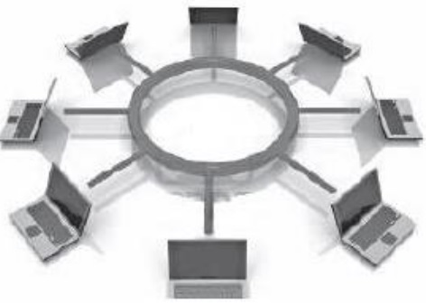

Es el conjunto de instrumentos empleados para manejar informacion por medio de la computadora como el procesador de texto, la base, graficadores,correo eletronico, hojas de calculo, buscadores, programas de diseño, presentadores, redes de telecomunicaciones,etc.
Son el conjunto de recursos, herramientas, equipos programas informaticos, aplicaciones, redes y medios;que permitan la compilacion, procesamiento, transmision como:voz, datos, texto, video e imagenes en pro de eficiencia y la agilidad.
| ventajas de las TIC. | Desventajas de las TIC. | |
|---|---|---|
| En la educacion. |
Acceso a diversas fuentes de informacion.
Comunicacion en tiempo real. Mayor interacion. Desarrollo de nuevas habilidades fuera del curriculo oficial. Aprendizaje personalizado. |
Riesgos de desigualdad y exclusion.
Pueden ser una fuente de distracion. Acceso a informacion de baja calidad. Dismunuye las habilidades manuales. |
| En la sociedad. |
Democratizacion del acceso a la informacion.
Optimizacion de tramites burocraticos. Acceso a productos y servicios sin limites geograficos. Acceso a nuevas tecnologias a precios accesibles. |
Peligro de exposicion de datos personales.
Acceso a informacion falsa. Exclusion y desigualdad. |
| En las empresas. |
Eficiencia en la toma de decisiones.
Nuevas modalidades de trabajo. Nuevas opotunidades de crecimiento. |
Reducion de puestos de trabajo.
Riesgos de ciberataques. |
| En el hogar. |
Facilitan la comunicacion.
Permiten el acceso a la educacion y el trabajo. |
Menos interacion familiar.
Contenido inapropíado. |
Los beneficios de las TIC en la gestion de empreas te brindaran la oportunidad de analizar datos especificos para planificar negocios.Tambien te ofreceran diversas herramientas resolutivas para los problemas mas complejos y para planificar la crecida de tu negocio.
Es un conjunto de computadoras y software que estan conectados por dispositivos que reciben y envian informacion por transmision guiada,transmision inalambrica satelites de comunicacion con el objetivo de compartir recursos como datos,programas y hardware.

| Ventajas. | Desventajas. |
|---|---|
|
Compartir software y hardware.
Compartir e itercambiar archivos entre los equipos. Centralizar programas de gestión (los usuarios pueden acceder al mismo programa para trabajar en él simultáneamente). Realizar copias de seguridad automáticamente. Organización efectiva. Mejora la comunidad y la disponibilidad de informacion. Una vez implementadas son económicas y ahorran tiempo. Comunicación rápida y eficiente. Posibilidad de manejo y control a distancia de nuestra computadora. Mejora la forma de trabajo individual y en equipo. |
carecen de independencia.
Existen muchos riesgos por lo que se deben tomar muchas medidas de seguridad. Se requiere personal capacitado para la administración y el mantenimiento de las redes. El costo para la implementación inicial es alto. Costos de operación y mantenimiento. Si se depende de la conexión a Internet y falla, se pueden ver las consecuencias en tiempo, dinero y esfuerzo. |
Cada computadora conectada a una red se denomina host o terminal.
Los servidores son computadoras que proporcionan información a los terminales de la red. Por ejemplo: servidores de correo electrónico, servidores web o servidores de archivos.
Los clientes son computadoras que envían solicitudes a los servidores para recuperar información, como una página web desde un servidor web o un correo electrónico desde un servidor de correo electrónico.
La infraestructura de red son todos los recursos que hacen posible la conectividad, la gestión, las operaciones comerciales y la comunicación de la red o Internet. La infraestructura de red comprende hardware y software, sistemas y dispositivos, y permite la informática y la comunicación entre usuarios, servicios, aplicaciones y procesos

Los datos se origina con un dispositivo final, fluyen por la red y llegan a un dispositivo final.
| Medio. | Ventajas. | Desventajas. |
|---|---|---|
| Cable coaxial. |
Permite la transmisión de voz, datos y video de manera Simultánea.
Tiene un bajo costo y su instalación es sencilla y rápida. Cuenta con una banda ancha con capacidad de 10 Mb/segundo. |
No hay modelacion de frecuencias.
Hace uso de conectores especiales para la conexion fisica. Ofrece poca inmunidad frente a los ruidos, aunque puede mejorarse con filtros. |
| Cable de par trenzado(UTP,STP,FTP). |
Dan muy buenas presentaciones para redes de area local.
Facilidad de utilizacion e instalacion. Bajo costo de fabricacion y adquisicion. Gran capacidad de trasmicion de datos de redes de area local. Rapida conectividad y actualizable. |
No son inmunes al ruido.
Ancho de banda limitado. Distancia limitada y necesidad de repeticiones. Tasa de error a considerar en altas velocidades. |
| Fibra optica. |
Ocupa poco espacio.
Facil instalacion. Es liviana. Presenta una gran resistencia. Es mas ecologica. Inmune a interferencias electromagneticas. Veloz, eficaz y segura. |
Mas costoso que los medios de cobre para la misma distancia.
Son fragiles. Requieren de conversores. Envejecen ante la presencia de agua. |
| Inalambrico. |
Accesibilidad.
Facil instalacion. Mayor cobertura. Flexibilidad. Movilidad y portatil. Escalabilidad. Eficiencia. |
Seguridad.
Ancho de bando limitado. Velocidad. Son propensas a las interferencias. Alcance. |

| Red | Definicion | Alcance |
|---|---|---|
| Red de area local(LAN). | Es una red que se limita a un área relativamente pequeña tal como un cuarto, un solo edificio | 200 m a 1 km. |
| Redes de área amplia, o WAN(Wide Área Network). | Son redes informáticas que se extienden sobre un área geográfica muy extensa, país o continentes, utilizando medios como: satélites, cables interoceánicos y fibra óptica. | Miles de kilometros. |
| Red de área personal, o PAN (Personal Área Network). | Es una red de ordenadores usada por la comunicación entre los dispositivos de la computadora cerca de una persona. | 10 Metros. |
| Red de área metropolitana o MAN (Metropolitana Área Network). | Es una red de alta velocidad (banda ancha) que da cobertura en una área geográfica más extensa, por ejemplo, una red que interconecte los edificios públicos de un municipio dentro de la localidad por medio de fibra óptica. | Hasta 50 kilometros. |
| Red de área global o GAN. | Utiliza la infraestructura de fibra de vidrio de las redes de área amplia (Wide Área Networks) y las agrupan mediante cables submarinos internacionales o trasmisión por satélite. | Miles de kilometros. |
| Red de área de campus o CAN. | Es una red inalámbrica para comunicar varios edificios que se encuentran a más de 1km en el mismo campus o empresa. | 1 a 3 km. |
| Red de área de Almacenamiento. | Es una red propia para las empresas que trabajan como servidores y no quieren perder rendimiento en el tráfico de usuario, ya que manejan una enorme cantidad de datos. | Ilimitado. |
Todos los modos de la red se conectan a un solo cable principal, que sirve a todos los dispositivos.Este es uno de los tipos de redes fáciles de configurar, pero al agregar demasiados dispositivos puede enfrentar la velocidad de la red a medida que la red trocal se gestiona. Este tipo de red también es increíblemente frágil, ya que una falla en cualquier punto de la red desconectara toda la red.

Son redes punto a punto en las que cada nodo está conectado a su vecino inmediato en ambos lados, con datos que viajan alrededor del anillo en una dirección hasta alcanzar el nodo correcto. La falla de un solo nodo provocara una interrupción en toda la red. Esta forma de red no requiere un servidor adminístrala.

Todos los nodos se conectan a un solo punto central, como en enrutador. El nodo central actúa como un único punto de falla y un posible cuello de botella de tráfico, pero también es uno de los diseños más fáciles de diseñar y expandir.

Las topología de árbol son una evolución del modelo de estrella e involucran múltiples redes estelares unidas por un bus central. Las redes de árbol generalmente se consideran como la topología más estables, ya que es fácil expandirse mediante la adicción de redes de estrellas adicionales.

es cuando hay mas de una conexion entre nodos.esta puede ser una topologia de malla completa en la que cada nodo esta vinculado a cada otro nodo o una malla parcial en la que son algunos nodos utilizan conexiones multiples esta forma de red es compleja de configurar y administrar pero incluye un alto nivel de redundancia contra fallas de red
 "mayor infotmacion sobre topologias de red.
"mayor infotmacion sobre topologias de red.
internet es un conjunto descentralizados de redes de comunicacion interconectads que utilizan la familia de productos TC/IP lo cual
Una página web, página electrónica o página digital es un documento digital de carácter multimediático (capaz de incluir audio, video, texto y sus combinaciones), adaptado a los estándares de la World Wide Web (WWW) y a la que se puede acceder a través de un navegador Web y una conexión activa a internet. Las páginas Web se encuentran almacenadas en servidores a los que es posible acceder velozmente gracias a un sistema de protocolos de comunicación (HTTO). Las páginas Web se encuentran programadas en un formato HTML o XHTML, y se caracterizan por su relación entre unas y otras través de hipervínculos. Las páginas Web cumplen con la tarea de brindar información de cualquier índole y en cualquier estilo o grado de formalidad. Algunos permiten distintos grados de interacción entre usuarios o con alguna institución, como son las páginas de foros, servicios de citas o redes sociales, las páginas de compra y venta de bienes, las páginas de consulta o de contacto con empresas, instituciones gubernamentales o con ONG, e incluso de páginas de soporte técnico especializado.
| tipo de pagina | estatica | dinamica |
|---|---|---|
| caraccteristicas |
se programan en lenguaje html
no permite la interaccion con el usuario son informativas documentales y no interactivas |
se progrma en lenguaje php
permite la interaccion con el usuario ocrrece ujna respuesta a los requisitops del usuario |
el comercio electronioc o ecommerce es el comercio de bienes y servicios en internet intenet permite a individuos y empresas comprar y vender una cantidad cada vez mayor sw biwnwa fisicos bienes digitales y servicios de forma electronica el comercio electronico conecta vendedores cpn clientes y permite intercambios a traves de internet puede funcionar de muchas maneras y adaptar varias formas
el comiercio comienza con las relaciones humanas